愛知県 の 中古ビジネスホン はお任せ!
ビジネスホン導入費 を約 70％ 以上削減！
愛知県 の 中古ビジネスホン はお任せ!
ビジネスホン導入費 を約 70％ 以上削減！
お任せ
中古ビジネスホン取付実績
約17万件
安心
全ての中古ビジネスホン
動作確認済
清潔
美品・中古ビジネスホン
除菌清掃済
資格
中古ビジネスホン販売許可
古物商許可
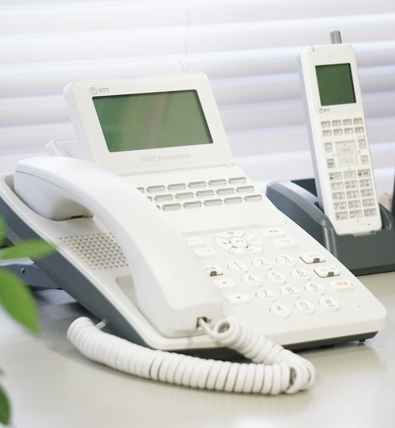
概要
ビジネスホンとは、オフィスや事務所などで使用する業務用電話機のことで、主装置と複数台の電話機を接続して使用します。主装置が、外部からかかってくる「外線」とスタッフ同士で通話できる「内線」を制御することで、オフィス内にて複数の外線と内線を共用できるようになります。中古ビジネスホン取付実績について
３０年の通信工事で、愛知県内はもちろん、県外の数あるお客様からのご依頼をいただき、ビジネスホンの取付を、約１７万件程施工させていただきました。中古品クリーニング・動作確認について
誠心誠意を込めて１台ずつ丁寧にクリーニングをさせていただいております。また、電話機等の動作確認はAI・DD第二種国家資格者が動作試験をしておりますので、ご安心してご利用いただけます。古物商許可申請済
中古機器の販売をする際は、各都道府県の公安委員会に届け出が必要となります。当社は「愛知県公安委員会許可第543850201300号」取得済みとなります。移転

オフィスや事務所の移転の際、現状ご利用しているビジネスホンを、移転先に再設置などのご依頼大歓迎！電話回線のお引越し等の移転手続きも全てお任せください。
増設
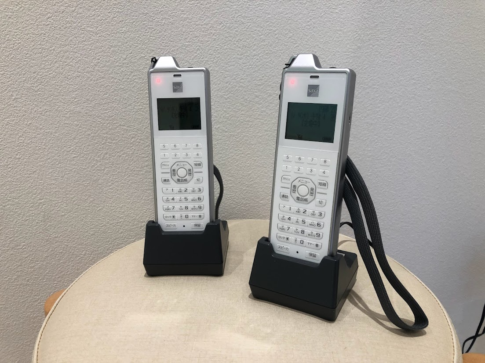
スタッフ増員などによる、ビジネスホンの増設もお任せください！中古or新品どちらの場合も対応可能です！またデスクやオフィス家具のレイアウト変更による、配線工事のご相談もどうぞ！
新設
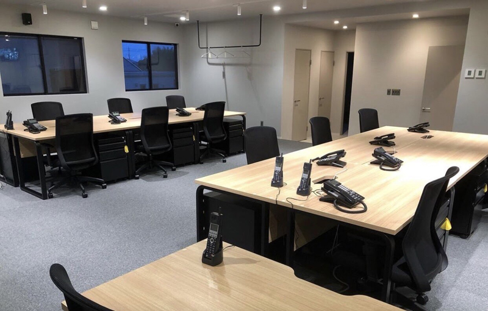
開業や独立で、新規の設置を中古ビジネスホンでご依頼される方は全体の約９割となります！見た目も機能も安心してお使いいただけますし、初期費用を抑えて施工いたします！
保守
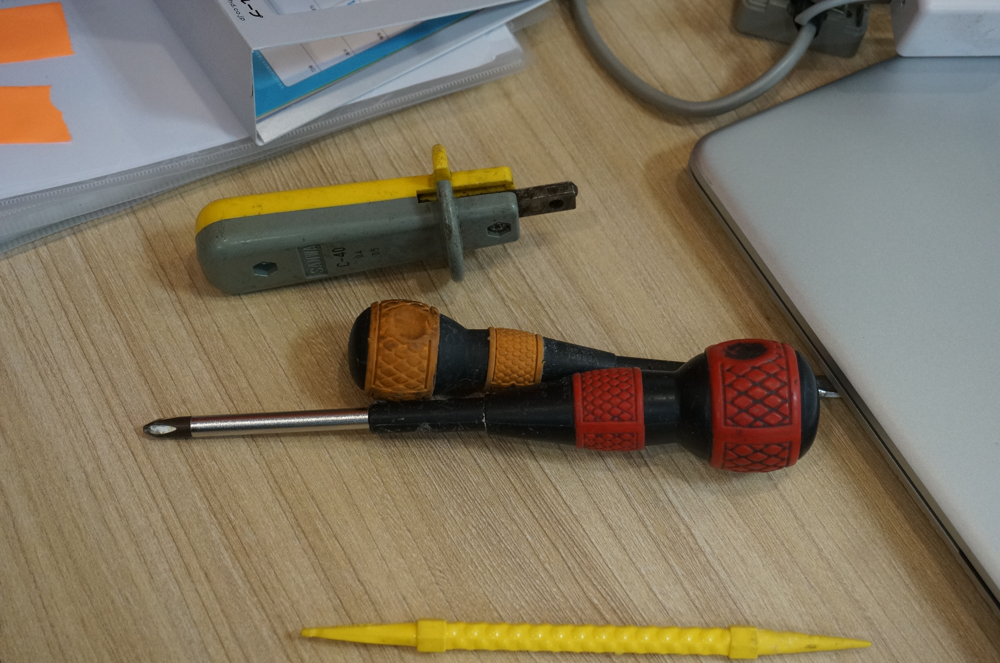
急なビジネスホンのトラブルもお任せください！夜間工事や休日工事も承っております！お急ぎの場合はお電話にてご連絡ください！
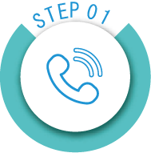
【お問合せ】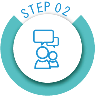
【現地調査・打合せ】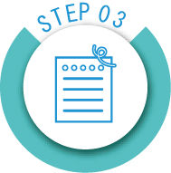
【お見積り】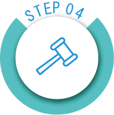
【施工工事】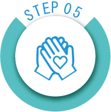
【保守】※お電話またはメールにて受付後、こちらから現地調査等のご連絡をさせていただきます。単純工事の場合は、現地調査が必要ない場合もございます。
お気軽にお問い合わせください
ご相談窓口・平日9時～17時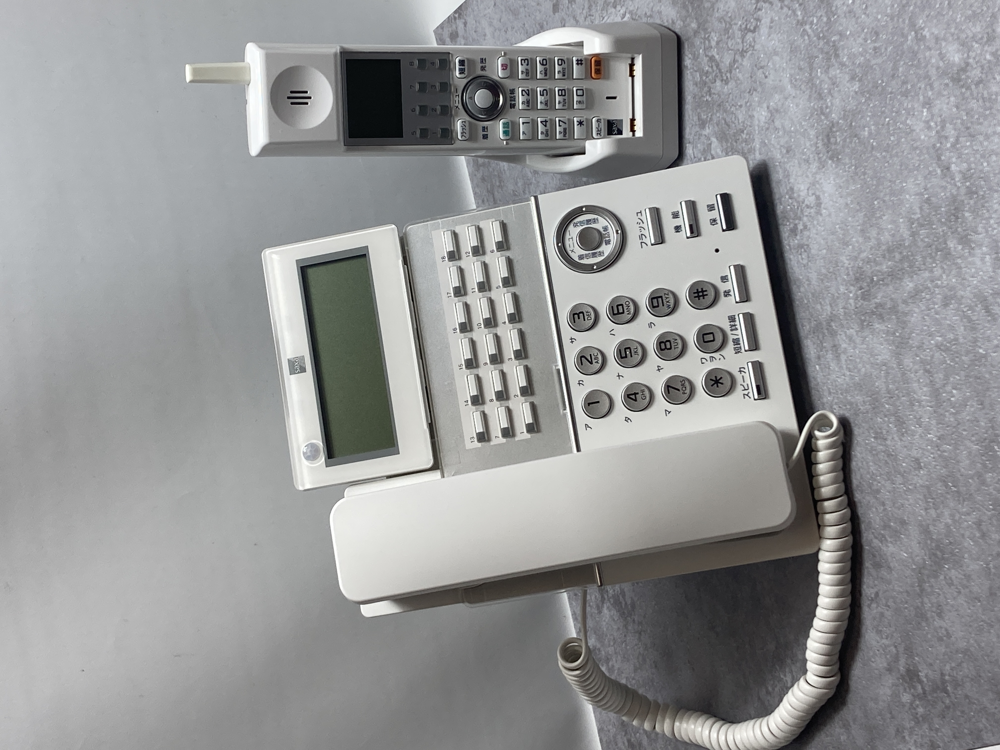
おススメ
SAXA製 PLATIAⅡシリーズ
見た目もシンプルでおしゃれな事務所におススメな製品です！
スマホ内線化
機能が充実した「プラティアⅡ」 スマホを内線のように使用することができ、会社の電話番号で、外出先から発着信が可能となり、とても人気のシリーズとなります。 中古電話機の状態もよく、常に選ばれる電話機となります！ 詳細はぜひ弊社にお気軽にお問い合わせください。
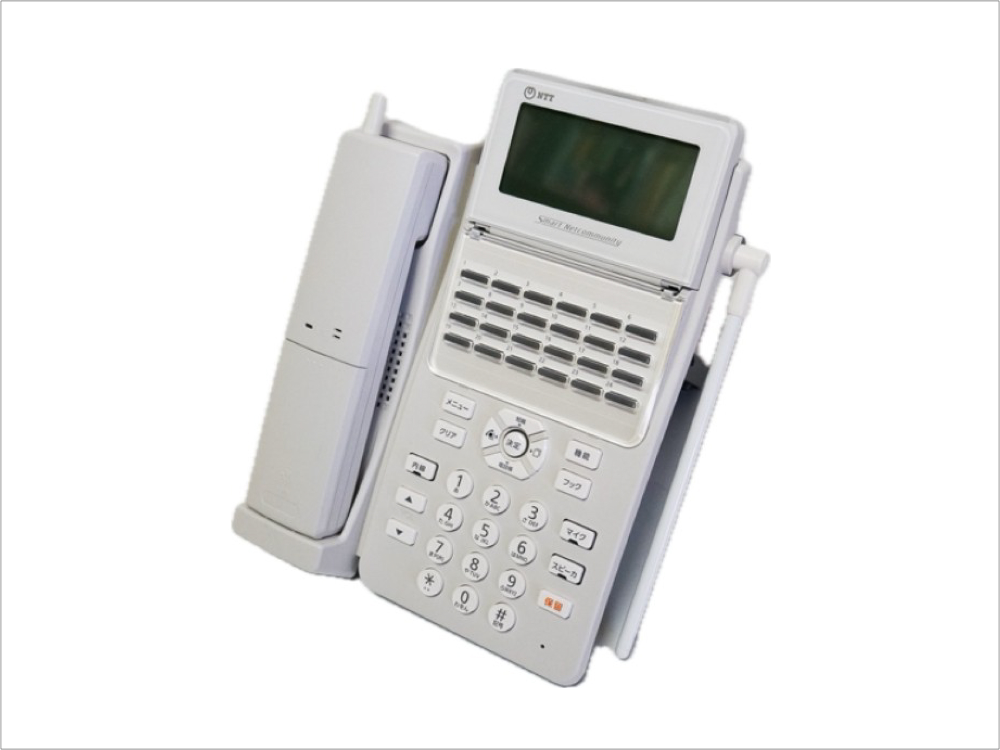
中古美品
NTT製 αN1シリーズ
安定の供給量・スタンダードな中古ビジネスホン
現行の前モデル
人気のNTT製モデルの「αN1シリーズ」使いやすさ、機器障害の少なさが、多くの皆様から支持されております。弊社では中古電話機の在庫量も安定しており、いつでもご提供することができるのでご安心いただけます。弊社で最も工事の注文が多く、どこよりも安く提供できる自信があります！！
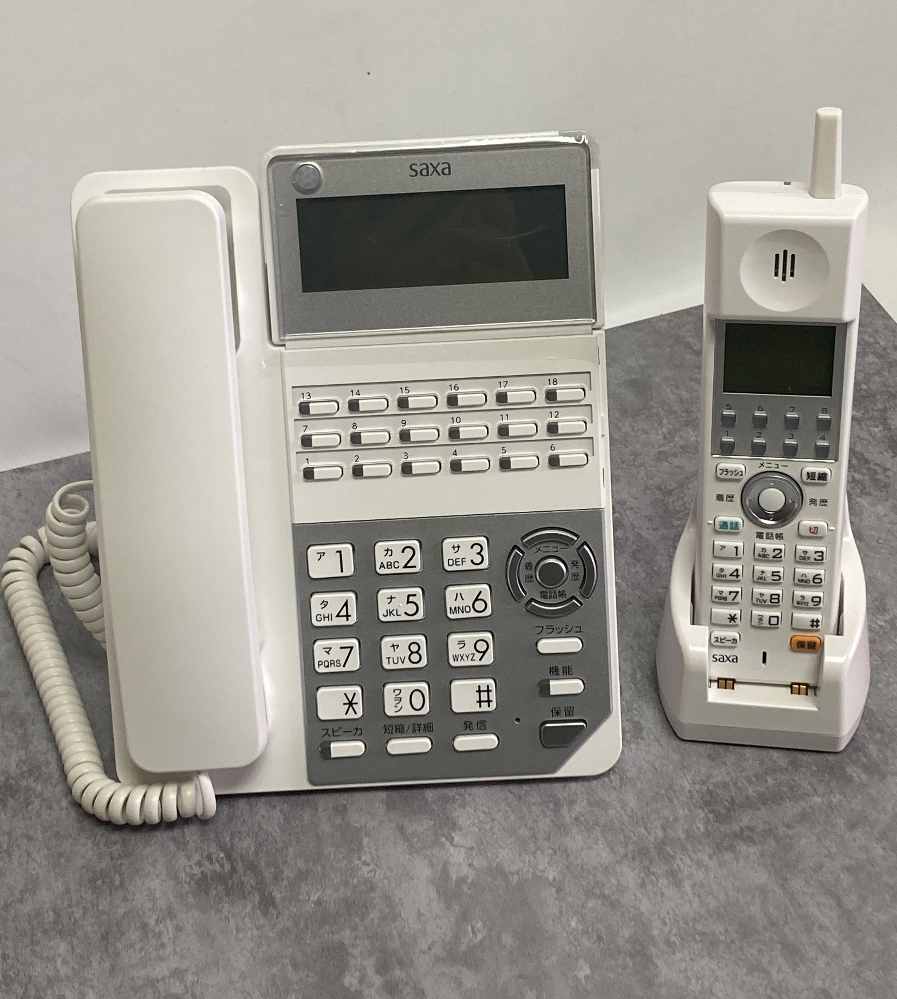
中古美品
SAXA製 PLATIAⅢシリーズ
2022年7月発売の最新SAXA製品
最新機能充実
こちらは最新のSAXA製モデル「PLATIAⅢ」多様化するワークスタイルに対応したビジネスホンです。オフィス内でも、オフィス外でもスマートフォンやタブレット端末を内線電話として利用できます！ビジネスオフィスに便利な機能が充実しておりおススメ製品です♪詳しくはお気軽にお問合せください！
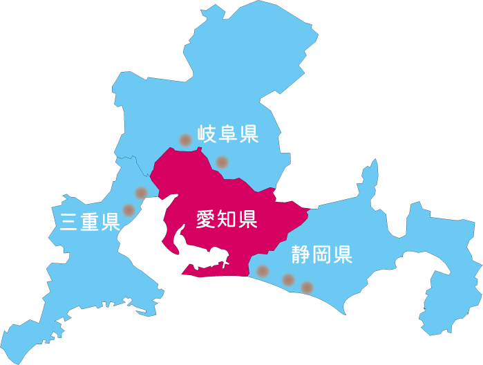
対応地域 ： 名古屋、愛知県全域、静岡県、岐阜県、三重県
【愛知県】
【静岡県】
【岐阜県】
【三重県】